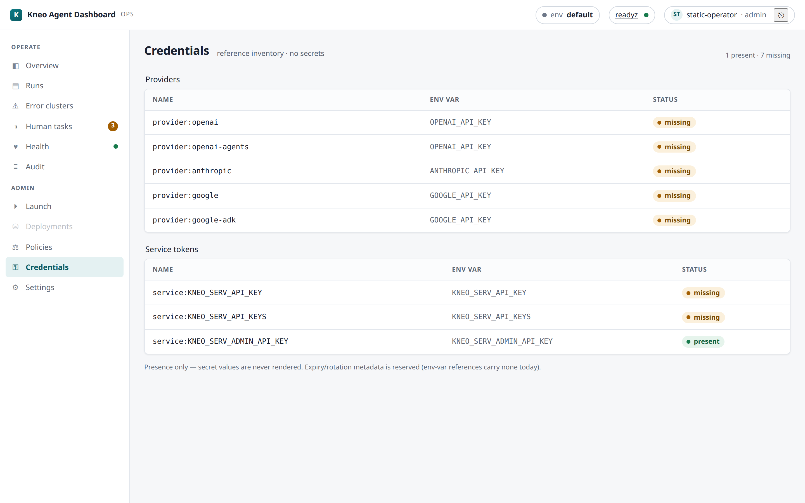
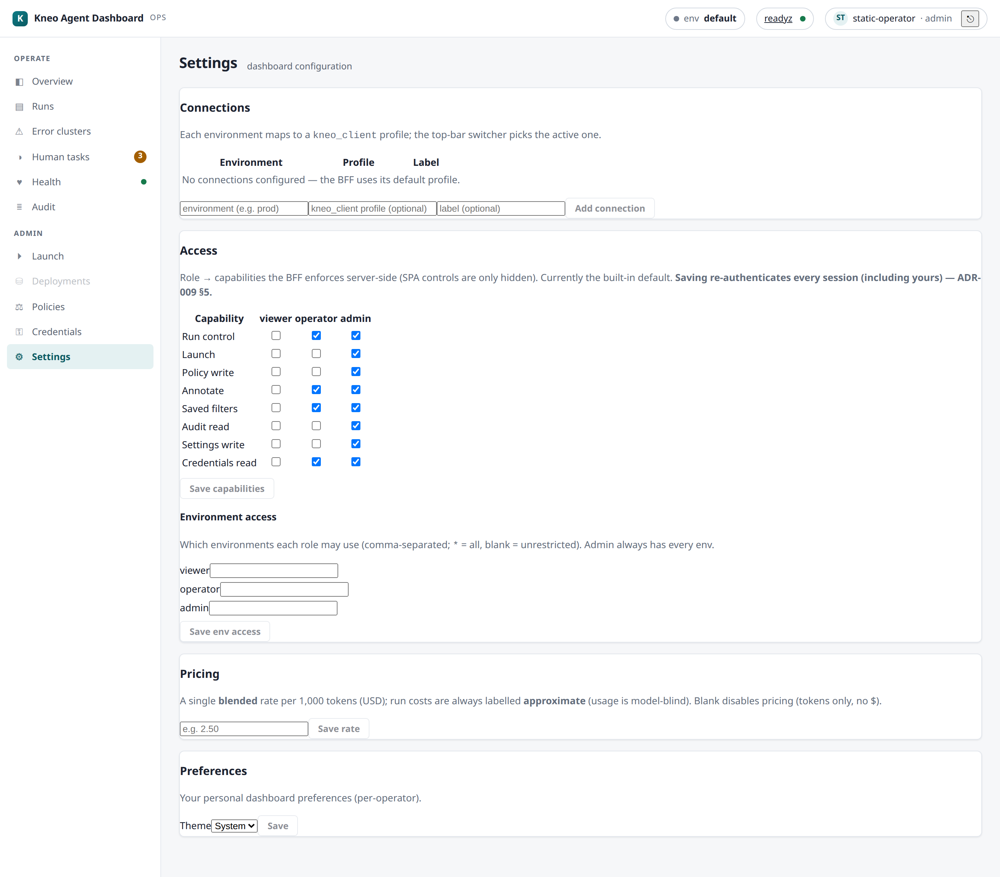

Kneo Agent Dashboard — Operator Guide¶
Generated by
docs/script/generate_combined_docs.py— a combined, offline-readable handout stitched from thedocs/user/*.mdguides. The online documentation site is canonical; when this and the site differ, the site wins. Links to developer/plan docs point outside this handout.
Quickstart¶
Run the Kneo Agent Dashboard against a Kneo Agent Platform (kneo-serv) in ~10 minutes.
The Dashboard is one deploy unit — a FastAPI BFF; the container image also
bundles and serves the built SPA (the browser UI). It talks to the platform
through kneo-client over /v1.
Prerequisites¶
- A reachable kneo-serv endpoint (its URL) and an API key for it.
- Python 3.12+ or Docker (for the container image).
Run it¶
Authentication — trial vs. production
KNEO_DASH_DEV_MODE=1 runs the Dashboard as a single, unauthenticated operator
(static mode, admin role) — fine for a local trial on a trusted machine, and the
Dashboard refuses to start in static mode without it so a real deploy can't
silently be unauthenticated-admin (ADR-009 §5). For any shared or production
deployment, drop KNEO_DASH_DEV_MODE and configure OIDC instead
(KNEO_DASH_AUTH_MODE=oidc + KNEO_DASH_SESSION_SECRET + the OIDC provider settings —
see connecting and the deployment/release setup).
docker run --rm -p 8090:8090 \
-e KNEO_URL="https://kneo-serv.internal" \
-e KNEO_API_KEY="…" \
-e KNEO_DASH_DEV_MODE=1 \
-v kneo-dash-state:/var/lib/kneo-dash \
ghcr.io/kneo-agent/kneo-dash:latest
The image bundles the BFF and the built SPA (served by the BFF), so there's no
separate frontend to deploy. The state store (annotations, saved filters, launch
history) defaults to a SQLite file under /var/lib/kneo-dash — mount a volume there
(as above) so it survives container restarts, or point KNEO_DASH_DB_URL at Postgres.
pip install kneo-dash
export KNEO_URL="https://kneo-serv.internal" KNEO_API_KEY="…"
export KNEO_DASH_DEV_MODE=1
kneo-dash # serves the full app (UI + API) on http://127.0.0.1:8090
The published wheel bundles the browser UI (ADR-011) — the BFF serves it
same-origin, so pip install gives the full dashboard without Docker, identical
to the container. (Building the wheel from source needs Node to build the SPA; the
published wheel already includes it. A pip install -e . dev checkout that hasn't
built the SPA runs API-only — /api/* with no UI.)
Open http://localhost:8090 — you land on the Overview, the operator's at-a-glance answer to what's running · what needs attention · is production healthy.

Your first five minutes¶
- Overview — scan the tiles (running · blocked · failed · pending human tasks) and the error-rate / spend lines. A non-zero failed or blocked tile is your cue.
- Runs — click the failed tile (or open Runs and set errors-only). Open a run.
- Trace — on a live run, flip Live tail to watch events stream (SSE); on a finished one, read the waterfall + Checkpoints to see where it went.
- Human tasks — if something's
blocked, it's waiting on a person; decide it there (Human-in-the-loop). - Launch (admin) — try Load → Deploy → Run on a spec to start a run end-to-end.
If a step misbehaves (empty env switcher, a 403, no live trace), the
troubleshooting guide has a symptom index.
Configuration¶
| Env var | What |
|---|---|
KNEO_URL + KNEO_API_KEY |
The platform endpoint + key (or a kneo-client profile / ~/.config/kneo/client.toml). See Connecting. |
KNEO_DASH_DB_URL |
Dashboard-local state store (annotations, saved filters). Unset → a local SQLite file (the container defaults it to /var/lib/kneo-dash/state.db on a volume); postgresql://… for multi-replica/HA (needs the postgres extra). |
KNEO_DASH_GRAFANA_URL |
Optional Grafana base URL for the Overview deep-link (real time-series live in Grafana). |
KNEO_DASH_CORS_ORIGINS |
Dev only (the Vite proxy). The shipped image is same-origin (BFF serves the SPA), which is the only supported model once auth lands — credentialed cross-origin hosting is out of scope (ADR-009). |
Security posture (read before exposing it)¶
Run OIDC mode for any real deployment
Set KNEO_DASH_AUTH_MODE=oidc (with a strong KNEO_DASH_SESSION_SECRET and your
provider config) so operators authenticate and the BFF enforces the required capability
server-side on every privileged action (the role resolves through the reassignable Access
map) — the platform credential is a shared per-env service account, so the BFF is the real
per-operator gate. The default static mode is unauthenticated
and dev-only: the app refuses to start in it unless you also set
KNEO_DASH_DEV_MODE=1. The SPA is served same-origin with an HttpOnly/Secure session
cookie; a trusted-network / reverse-proxy layer is now optional defence-in-depth, not a
prerequisite. See ADR-009.
Where next¶
- Connecting — profiles, environments, the state store.
- Runs & debugging — the core monitoring loop.
- Human-in-the-loop · Audit & health · Policies & credentials.
- Deployment + the post-deploy checklist — taking it from trial to a real deploy.
- Troubleshooting — when something doesn't come up right.
Tutorial — zero to operating, timed (0.8.0)¶
A timed, end-to-end walkthrough: deploy the dashboard → connect it to your platform → launch an agent → watch it live → resume its human step → find it in the audit trail. Every stage has a time budget; the whole path is designed to fit under 60 minutes on the supported production recipe (well under 30 on the eval stack). If a stage blows its budget, that is a finding — record it (this tutorial doubles as the beta charter's non-author validation script).
Prerequisites: Docker + compose; a kneo-serv (≥ 1.2.0) you can reach (or use the eval stack, which brings its own); for the production path: a TLS cert, an OIDC client registration, and 15 spare minutes at your IdP's console. The quickstart's "first five minutes" is the untimed short form of stages 2–3.
Your timing record¶
| Stage | Budget | Your time | Findings |
|---|---|---|---|
| 1 · Deploy | 20 min | ||
| 2 · Connect + first look | 10 min | ||
| 3 · Launch | 10 min | ||
| 4 · Live trace | 5 min | ||
| 5 · Human-in-the-loop | 5 min | ||
| 6 · Audit + wrap | 10 min | ||
| Total | 60 min |
Stage 1 · Deploy (budget: 20 min)¶
The supported shape is the production recipe — OIDC + SQLite + TLS proxy (deployment guide has the full detail):
git clone https://github.com/kneo-agent/kneo-dash && cd kneo-dash/examples
cp .env.example .env # fill in: KNEO_URL/KEY · session secret · OIDC block
mkdir tls && cp /path/fullchain.pem /path/privkey.pem tls/
docker compose -f docker-compose.prod.yml --env-file .env up -d
Checkpoint (stage passes when): https://<host>/api/readyz returns 200 and the
login page renders. (Evaluating only? docker compose up on
examples/docker-compose.yml reaches the same checkpoint in ~3 min, static auth —
budget the stage at 5 min and skip the OIDC/TLS rows.)
Common budget-eaters: an OIDC redirect-URL mismatch (must be exactly
https://<host>/api/callback) and a proxy that rewrites Host
(hardening guide — the same-origin guard needs it intact).
Stage 2 · Connect + first look (budget: 10 min)¶
- Sign in (your IdP → the role you mapped in
KNEO_DASH_OIDC_ROLE_MAP; use an admin identity for this tutorial). - Settings › Connections → Add connection: name your environment (e.g.
prod), point it at akneo_clientprofile. The top-bar env switcher now offers it — and (0.8.0) offers each operator only the environments their role may use. - Tour the operator's five questions: Overview (what's running / is it healthy), Runs, Human tasks, Health, Audit.
Checkpoint: the switcher shows your env; Health renders real platform probes (not an error card).
Stage 3 · Launch (budget: 10 min)¶
Launch (admin group) walks Load → Deploy → Run (policies & credentials explains the gating):
- Paste a Studio-produced spec (or the no-LLM smoke spec from examples) into the inline editor.
- ① Load — a static preview: what this agent is.
- ② Deploy — compile + policy verification against your env → READY.
- Enter the run input, type the environment name into the confirm gate, ③ Run.
Checkpoint: the SPA lands on the new run's detail page with a run id.
Stage 4 · Live trace (budget: 5 min)¶
On the run detail: Trace tab → Live tail. Watch events stream
(workflow_started → …). This is the SSE path the platform emits and the dashboard
tails — the live-debugging loop (runs & debugging).

Checkpoint: "streaming…" with at least one event frame on screen.
Stage 5 · Human-in-the-loop (budget: 5 min)¶
If your spec has a human step (the smoke spec does), the run pauses and the task appears in Human tasks (the nav badge counts pending work):

Open the task → choose a decision → Resume. The run continues (or completes).
Checkpoint: the queue row clears and the run's status moves past blocked.
Details: human-in-the-loop guide.
Stage 6 · Audit + wrap (budget: 10 min)¶
- Audit — find your launch and your resume, attributed to your identity (this is the per-operator trail the platform's shared service account can't give you):

- Health — confirm all subsystems green after your traffic.
- (Production) Confirm your Prometheus is scraping
/metrics(observability) and skim the post-deploy checklist for what to watch in week one.
Checkpoint: both of your actions visible in Audit with your identity + outcome.
Recording your run¶
Fill the timing table above. Non-author validators (the beta-charter checkbox):
file the completed table plus any stage that failed its checkpoint or budget as a
GitHub issue labeled beta-feedback — task failures get dispositioned in the release
tracker, not silently absorbed.
Connecting to the platform¶
How the Dashboard reaches kneo-serv, how the operator session maps to platform
credentials, and where dashboard-local state lives.
The platform connection¶
The BFF never talks to kneo-serv directly — it goes through kneo-client, which
owns auth, retries, idempotency, pagination, and error normalization. The connection is
a kneo-client profile, resolved from:
KNEO_URL+KNEO_API_KEYenvironment variables, orKNEO_PROFILEnaming an entry in~/.config/kneo/client.toml.
The API key stays in the profile store — it is never read into the browser. Every
/api/* request opens a short-lived client for that profile and closes it on teardown.
Operators authenticate at the BFF (0.4.0)
A real deployment runs OIDC (KNEO_DASH_AUTH_MODE=oidc): each operator signs in,
gets a server-side session, and is authorized server-side by capability (the role is
resolved through the effective Access map; the required capability is enforced) on every
privileged call. Dashboard-local writes are stamped with the real operator
identity (created_by: system appears only on pre-0.4.0 rows). Static mode
(KNEO_DASH_DEV_MODE=1) is a single unauthenticated operator — dev/trial only
(the app refuses to start in static mode without the opt-in). See
ADR-009.
Platform compatibility (kneo-serv version floors)¶
The Dashboard pins a kneo-client range (kneo-client>=1.1.0,<2), not a kneo-serv
version. kneo-client negotiates the wire contract at runtime, so newer platform features
degrade gracefully by the live server's capability rather than requiring a matching serv
pin. A few surfaces need a recent kneo-serv; below the floor they drop the feature, not the
page:
| Feature | Needs kneo-serv | Below the floor |
|---|---|---|
Runs list content search (q, over run output) |
≥ 1.2.0 | the q facet is dropped and the list re-runs without it (the below-floor 422 unknown_query_parameters → the BFF drops the top tier and retries) |
Runs list filters — has_error · workflow_kind · created_after / created_before |
≥ 1.1.0 | those facets are dropped (tier-by-tier); the base status filter still applies |
Session / run-chain filter (session_id) |
≥ 1.1.0 | the run-chain nav reports available: false |
| Run graph (workflow DAG) | ≥ 1.1.0 | available: false — the SPA falls back to the RunDetail.path breadcrumb |
| Checkpoint diff (time-travel) | the diff endpoint | surfaces "not available" via the standard error envelope (§12) |
The BFF drops the highest tier first and retries, so e.g. a 1.1.0 server keeps
has_error/workflow_kind/age filtering and only loses q. Each dropped facet is reported
so the SPA can show what the live server couldn't honor. This is the same tiered-degrade
mechanism the dev docs call _FILTER_TIERS.
Environments¶
The top bar shows the active environment chip with a live env switcher (0.4.0;
since 0.8.0 it lists only the environments your role may use — an env-restricted
role never sees an option whose use would 403):
its options come from Settings › Connections (each environment → a kneo_client
profile), and the active env rides on X-Kneo-Env so a single Dashboard serves multiple
environments. Per-role environment grants (Settings › Access) confine which roles may
use which envs. With no Connections configured, the BFF falls back to its default profile
(KNEO_URL/KNEO_API_KEY).
Worked example — add a staging environment. In Settings › Connections, add
staging → the kneo_client profile that points at your staging kneo-serv (each env maps to
one profile). It now appears in the top-bar switcher; selecting it sends X-Kneo-Env: staging
on every call so Runs/Health/Launch all target staging. To keep it to a subset of operators,
grant the env per-role in Settings › Access (env grants).
The dashboard state store¶
Presentation state the Dashboard owns — operator annotations/tags and saved filters — persists in a small local store (never platform truth; no secrets):
- Default: SQLite — a file on the BFF host (
KNEO_DASH_DB_URLunset). Single instance. Fine for one Dashboard process. - Postgres — set
KNEO_DASH_DB_URL='postgresql://…'and install thepostgresextra (pip install 'kneo-dash[postgres]'). Several Dashboard replicas can then share one store. Same schema + migrations, applied automatically at startup. Multi-replica Postgres is best-effort (documented, not soak-certified); single-instance SQLite is the supported/certified shape — see deployment › State store and ADR-012.
Rows are org-shared with a created_by stamp — the authenticated operator in OIDC
mode (system only on pre-0.4.0 rows). See
ADR-006.
Health of the connection¶
The top-bar dot and the Health page reflect live
readyz; a 401 routes the operator to re-login and a 403 surfaces as a typed
view-only error (server-side RBAC, 0.4.0).
Related¶
- Quickstart — the fastest path to a running Dashboard.
- Settings — Connections, Access + env grants, Pricing, Preferences.
- Environment variables — every
KNEO_*/KNEO_DASH_*setting. - Deployment › state store — SQLite vs Postgres support.
- Troubleshooting — empty env switcher,
401/403, below-floor filters.
Runs & debugging¶
The core monitoring loop: find runs, drill in, follow their execution, steer them — and get data out for hand-off. This is where an operator spends most of their day.
Overview¶
The landing page — the at-a-glance answer to what's running · what needs attention · is
production healthy. Tiles (running · blocked · failed · pending human tasks · total) are
derived from the platform on a light refresh; each drills into the matching filtered
surface. A readiness pill mirrors platform health, and — when KNEO_DASH_GRAFANA_URL is set —
a Grafana deep-link covers real time-series (the tiles are lightweight counts, not a
metrics store).
Two summary lines sit beside the tiles:
- Error rate —
failed / totalover the counted runs, rendered only when it's computable (hidden when the total is0or unknown). A quick "how healthy is this env?" glance, not a windowed SLO. - Spend (7d) — the approximate 7-day blended cost for the active environment. Shows
—until a price book is set, and flags a window-truncated figure as a lower bound. See Cost & spend.
Error clusters¶
"What's failing, across runs?" The Operate → Errors page (/errors) answers the
cross-run triage question the per-run view can't: it fetches a recent window of status=failed
runs and groups them by workflow, most-failing first (GET /api/runs/error-summary →
ErrorSummaryView).
Each group shows the workflow (kind + name), the failure count in the window, and a
few sample run ids to jump straight into. total_failed and scanned frame the window —
like the other aggregations here it scans a recent budget of runs, not all history (the
"not a metrics store" caveat), so a very old failure may fall outside it.
Worked example. Three runs of orders.refund and one of billing.sync failed in the
window → the page shows a refund group with count: 3 (three sample ids) above a sync
group with count: 1. Click a sample id to open that run's detail; use the workflow name to
narrow the Runs list to everything failing in that workflow.
Runs list¶
"What's running · what's stuck." Auto-refreshes on a light interval (pause it with the Live toggle when you're reading a stable snapshot).
Filtering¶
- status · errors-only · stuck-only (a BFF heuristic:
runningwith a staleupdated_at, orblockednear a deadline) · workflow kind · created-since · content search (q, over run output). - Facets a below-floor kneo-serv doesn't support are disabled, not silently dropped (the
platform compatibility floors):
qneeds serv ≥ 1.2.0;has_error/workflow_kind/created-since need ≥ 1.1.0. - Go to run id — jump straight to a run by id (press
/to focus the box).
Worked example — triage the last hour's failures. Set errors-only + created-since
= 1h, and (on serv ≥ 1.2.0) type an error fragment in q. You now have every failed run
in the window mentioning that text; sort/scan, then click into one, or Export the view
(below) to hand it to whoever owns the workflow.
Saved filters¶
Name the current filter set and re-apply it in one click — stored in the dashboard state
store and shared across operators (an org-shared triage vocabulary). Writing one needs the
filter.write capability (operator/admin in the built-in default map).
- Create — name the active filter; it appears in the saved list.
- Apply — one click re-runs the Runs list with that filter.
- Update / rename — editing a saved filter carries its version; if someone else
changed it since you loaded the list, the write is refused
409"changed since you read it — refresh" (optimistic concurrency) rather than silently clobbering their edit. - Delete — likewise version-guarded (a stale delete is
409, a missing one404).
Export (CSV / JSON)¶
Export the current filtered view for an incident hand-off or compliance extract — the Export CSV / Export JSON buttons. Key properties:
- Bounded. It pages the same Runs endpoint up to ~1000 rows (20 × 50); when the window is larger you get a truncation note, so an extract never silently claims to be all history.
- Client-composed, no special permission. Export is built in the browser from reads you can already make — there is deliberately no export capability or server endpoint (ADR-009); anyone who can see the runs can save them.
- Spreadsheet-safe CSV. Cells that could be read as a formula (leading
= + - @) are neutralized, and commas/quotes/newlines are quoted — so a crafted workflow name can't execute in Excel/Sheets. - A
401mid-export routes you to re-login; any other failure surfaces a note with the request id (see troubleshooting).
Bulk Stop¶
Select rows (per-row checkboxes or select-all) and Stop selected to cancel several runs at
once (needs run.control). The Dashboard fans out one idempotent cancel per run, each
independent — an already-terminal run is a 200 no-op and a conflict on one run doesn't sink
the batch; a results banner summarizes N stopped / M failed, grouped by reason.
Run detail¶
Open a run for its tabs:
- Overview — status, agent, current node/step, continuation + session id (links to the session view), tokens, error.
- Trace — the event waterfall (paged), with a Live tail toggle that streams new events over SSE while the run is active.
- Checkpoints — the checkpoint timeline + a time-travel diff between any two sequences (added / changed / removed state).
- Graph — the workflow DAG (visited/current highlighted); falls back to a path breadcrumb on older servers.
- Chain — sibling runs sharing this run's session (walk pause→resume); vs ⇄ compares a sibling with the current run (compare).
- Recover — where a failed/interrupted run stopped + the replay timeline; offers Resume when recoverable.
- Policy — the compiled spec's policy outcomes for this run (human-review requirements, diagnostics). See Policies.
- Notes — operator annotations + tags for the run (see below).
Run control¶
Stop (cancel, cooperative) shows on any non-terminal run; Resume (continue) shows
on a blocked run. Both need run.control. Each action is idempotent (a per-attempt key), and
the view polls until the run reaches a terminal state, so the buttons hide once it's done.
Stopping an already-terminal run is a 200 no-op, not an error (see the
compatibility notes / the API
contract).
Notes & annotations¶
The Notes tab attaches operator annotations — a free-text body + tags — to a run
(dashboard-local; needs annotate). Each note is stamped with the authoring operator and
carries a version:
- Add a note (body + optional tags) to the run.
- Edit / delete carry the note's version, so a concurrent edit by another operator is
refused
409"changed since you read it — refresh" (optimistic concurrency) rather than one write silently clobbering the other. - Notes are org-shared and stamped with the real operator identity; a successful note write is not in the audit log (only capability denials are — see the audit contract).
Export a run bundle¶
The run detail's Export bundle button downloads a single JSON bundle — the run detail (status / trace / checkpoints / …) plus that run's recent audit events — for attaching to an incident ticket or sharing a picture of one run. Composed client-side from reads you can already make; the audit slice is a recent page (not a full deep-history export).
Sessions¶
A session groups the runs of one thread across pause→resume boundaries. Reach it from a run's
Session id — /sessions/:id lists that session's runs oldest-first (needs serv ≥ 1.1.0 to
filter by session; older servers show the chain as unavailable).
Comparing two runs¶
From the Chain tab's vs ⇄ link (or /compare?a=&b=), see two runs side-by-side — status,
workflow, node/step, path/trace/checkpoint counts, tokens, error — to spot what changed between
an original run and its continuation.
Worked example. A run blocked, was resumed, and the continuation still failed. Open the
continuation → Chain → vs ⇄ against the original: the diff shows the continuation
advanced two nodes further before erroring, narrowing where to look.
Launching a spec¶
Under Admin → Launch, operate a Studio-produced spec in three phases: Load (static
preview) → Deploy (validate + compile + policy-report against the target env → ready?) →
Run (start a real run). Run is a platform-authoritative mutation gated by a typed
confirm (re-type the environment name) and the launch capability; editing the spec/env
re-arms the gate. Recent launches are kept as a reference-only MRU (spec_path · label ·
digest — never the inline spec) for one-click re-launch.
Related¶
- Human-in-the-loop — deciding a
blockedrun's task. - Audit & health — the platform audit timeline + health.
- Cost & spend — the Overview Spend line + the price book.
- Connecting › compatibility — which filters need which serv.
- Troubleshooting —
409conflicts, SSE not streaming, and using the request id.
Human-in-the-loop¶
"What needs human action." When an agent pauses for a human decision, the run
blockeds and a task appears in the Human tasks queue.
The queue¶
Tasks are listed deadline-first. Each row shows the workflow, the request summary
(links to the detail), status (pending / escalated), the deadline (a warn pill when
near or overdue), and the run. The nav badge carries the live pending count.
escalated— the task timed out but is still resumable; it stays in the queue rather than disappearing.- Near-deadline — a task approaching its deadline shows a warn pill and raises a one-time near-deadline toast so you notice before it expires.
Deciding a task¶
- Fast path — the queue's Approve / Reject buttons resume immediately.
- Richer decisions — open Details… for a task that needs content or a choice:
provide (supply content), edit (amend), or select (pick from
options). The detail view shows the request prompt + the redacted message thread.
Every resume is idempotent — a per-attempt Idempotency-Key makes a retry safe, and
kneo-client replays rather than double-resuming. Resuming past the deadline surfaces a
clear "task expired" message (human_task_expired) and refreshes the queue.
Worked example — approve a refund hold. A refund run blocks on a "confirm amount" task.
It appears in the queue with a near-deadline pill. Open Details…, read the request prompt
+ the redacted thread, and either hit Approve (fast path) or, if it needs a value, use
provide to supply the amount and resume. The run leaves blocked and the task drops off the
queue; if you were a minute too late, you get "task expired" and the run stays blocked for a
fresh escalation.
Bulk resume¶
Select several rows (per-row checkboxes or select-all) and apply one decision — Approve
selected / Reject selected. The Dashboard fans out one idempotent resume per task,
each independent: an expired or conflicting task doesn't sink the batch. A results banner
summarizes N succeeded / M failed, grouped by reason (e.g. human_task_expired,
run_state_conflict).
Note
Resuming is platform-authoritative — the platform enforces who may resume via its
scope. On top of that the Dashboard authorizes it server-side by capability (0.4.0):
resume requires the run.control capability (held by operator+admin in the built-in default map; reassignable via the Access map — the role is just the lookup key), and the acting operator
gets a best-effort append to the local audit log (best-effort, not guaranteed — see
the audit contract).
Related¶
- Runs & debugging — a blocked run's detail + Resume.
- Settings › Access — who holds
run.control. - Troubleshooting —
human_task_expiredand other resume outcomes.
Audit & health¶
"What changed" and "is production healthy" — the compliance + operational-health surfaces.
Audit¶
Operate → Audit is a searchable, newest-first timeline of platform audit events —
run creation/cancellation, human decisions, policy changes, spec actions. It reads the
platform's audit log (kneo-serv is the store; the Dashboard adds none of its own).
Viewing it requires the AUDIT_READ capability (admin in the built-in default map;
reassignable via Settings › Access) — the BFF gates GET /api/audit server-side.
- Filter by
event_type(e.g.run.created,policy.changed,human.decision) and/orrun_id; offset pagination walks deep history to the window cap. - Each row shows when, the event type, actor, the related run (a click drills to the run), and the event's metadata.
Worked example — reconstruct who did what to a run. Filter by the run_id to get that
run's full platform-side timeline (created → policy applied → cancelled → resumed), each row's
actor telling you who. For per-operator Dashboard attribution (kneo-serv sees only the
shared service account) cross-reference the dashboard-local audit log noted below.
Export (CSV / JSON)¶
The Export CSV / Export JSON buttons save the current audit window for a compliance
review or incident hand-off. Same discipline as the Runs export:
it pages the audit endpoint up to a bounded ~1000 rows and flags truncation when the
window is larger (the extract never claims to be the whole history), the CSV is
spreadsheet-formula-safe, and it's composed client-side from the reads your AUDIT_READ
capability already grants — no separate export permission.
Dashboard-local audit log (separate from this page)
This page surfaces the platform audit (anything reaching /v1). The Dashboard
also keeps its own append-only log (0.4.0) at GET /api/audit-log (needs the
AUDIT_READ capability — admin by default) — a best-effort per-operator record (an
append failure is counted, not fatal, so it is not a lossless/compliance-grade log)
of privileged platform mutations, Access/Connections/Pricing writes, and capability
denials. Successful annotation/saved-filter writes are not appended (their
capability denials are; successes carry only a created_by stamp); Preferences
is ungated — no capability and no audit append at all. Exact scope:
the audit contract.
Health¶

Operate → Health derives the platform's operational health from its probes and metadata:
- Probes —
livez(process up),readyz(accepting work),healthz(deep check). The top-bar dot mirrors livereadyzand polls, so it reflects current state. - Subsystems — queue, run-state store, continuation store, OTel exporters, secret
status, etc. — each shown
ok/degradedwith a detail line, derived adaptively from the health metadata the platform reports.
Health is read-only status. Platform runtime configuration (queue limits, retention, confinement, exporters) is kneo-serv ops (env/CLI), not the Dashboard.
Worked example — the top-bar dot went amber. Open Health: readyz is degraded and the
continuation store subsystem shows degraded with a detail line. That's a platform
dependency, not the Dashboard — the Dashboard's own health is a separate concern (its
GET /api/healthz, see troubleshooting). Escalate
to platform ops; runs will queue/stall until it recovers.
Related¶
- Runs & debugging — drill from an audit row into the run.
- Data handling — the dashboard-local audit log's retention + best-effort posture.
- Deployment › probes — the Dashboard's own
livez/readyz/healthz. - Troubleshooting — health triage + symptom index.
Observability & monitoring¶
How to watch the Dashboard BFF's own health in production: the opt-in /metrics endpoint,
the signals it exposes, and an alert catalogue. This is the Dashboard's operational telemetry —
distinct from the platform's time-series (which you view in Grafana via the Overview
deep-link) and from the Health page (which reflects the platform's
readiness). The full metric spec is telemetry.md.
Enabling /metrics¶
GET /metrics is opt-in and disabled by default — it returns 404 unless a scrape token
is set:
- Set
KNEO_DASH_METRICS_TOKEN(≥ 32 chars; environment). With it set,/metricsserves Prometheus text exposition to a request bearing the token; a missing/wrong token gets401(and/metricsis404when the token is unset — disabled). - Also network-restrict
/metricsat your reverse proxy — don't expose it publicly even with the token. - It's an instantaneous exposition — your Prometheus scrapes + stores it; Grafana graphs it. The Dashboard is not a time-series store (ADR-005).
Signals (shipped 0.6.0)¶
| Metric | Type | Watch it for |
|---|---|---|
kneo_dash_build_info |
gauge (=1, version label) |
which version a replica is running |
kneo_dash_http_requests_total |
counter (method·route·status_class) |
request volume + error ratio (BFF-side) |
kneo_dash_http_request_duration_seconds |
histogram | BFF request latency (the queryable access-log) |
kneo_dash_sse_active_streams |
gauge | live trace-stream occupancy vs the per-operator cap |
kneo_dash_audit_write_failures_total |
counter | best-effort audit append failures (the log isn't lossless) |
kneo_dash_store_reachable |
gauge (1/0) | a trivial store read succeeds (1) or not (0) |
kneo_dash_store_state_bytes |
gauge | state-store disk footprint (SQLite main + WAL + SHM) |
Counters are process-local and reset on restart (use rate()/increase(), not the raw
total); on multi-replica each replica exposes its own /metrics (no built-in aggregation —
your Prometheus aggregates). store_state_bytes is absent (not 0) on Postgres.
The platform-dependency histogram/counter
(kneo_dash_platform_request_duration_seconds / kneo_dash_platform_requests_total{operation,outcome})
land in 0.8.0: BFF latency minus platform latency isolates BFF-side time, so a /v1-only
regression points at kneo-serv/network rather than the dashboard.
State-growth metering (0.8.0): kneo_dash_sessions_active and
kneo_dash_store_rows{table="audit_log"|"launches"} expose the store's growth at scrape
time. When the row gauges trend up unbounded, the operator-safe kneo-dash prune CLI
(export-before-delete, self-auditing — see the deployment guide) is the remediation;
conservative pre-soak watch guidance: investigate around ~500k audit rows / ~50k
launches on the certified single-instance topology (tuned thresholds land post-soak).
Ready-to-run monitoring assets (0.8.0)¶
examples/monitoring/
ships a Prometheus scrape config (15s interval, bearer-token file, plus the
self-scrape the soak's continuity check reads) and alerts.yml — the enforceable form
of the catalogue below with conservative pre-soak thresholds (tuning happens in those
files, deployment-side). The 0.8.0 soak harness (scripts/soak/) drives + grades the
beta acceptance workload against this stack.
Alert catalogue¶
Guidance, not committed SLOs — the Dashboard ships no product SLOs; these are signals to watch, with untuned thresholds (tune to your traffic; the soak-derived numbers land in 0.8.0). Start with:
| Alert | Signal | Why |
|---|---|---|
| Audit trail degrading | rate(kneo_dash_audit_write_failures_total[5m]) > 0 |
the best-effort local audit is dropping appends — attribution gaps (treat the window as known-incomplete) |
| SSE nearing capacity | kneo_dash_sse_active_streams trending toward your connection ceiling |
operators will start getting 503 Retry-After on new trace streams |
| BFF errors | rate(kneo_dash_http_requests_total{status_class="5xx"}[5m]) elevated |
BFF-side failures (a 4xx spike is usually client/auth, not the BFF) |
| Store unreachable | kneo_dash_store_reachable == 0 |
the state store isn't answering — readyz will be 503, sessions/annotations/settings fail |
| Disk growth | kneo_dash_store_state_bytes + kneo_dash_store_rows{table} growth |
audit + launch-history are append-only — bound them with kneo-dash prune (0.8.0) and size the volume for steady-state between prunes (data handling) |
Related¶
- Operational telemetry spec — the full metric inventory + label rules.
- Audit & health — the platform-health page + the Overview Grafana deep-link.
- Deployment — the
livez/readyz/healthzprobes (distinct from/metrics). - Data handling — retention + the best-effort audit posture behind the failure counter.
Cost & spend¶
"Roughly what is this environment costing?" The Dashboard derives an approximate, blended per-environment spend figure from run token usage and a price book you set. It is a cost estimate for orientation, not a billing source — the platform's usage is model-blind, so the number is intentionally a blended approximation.
What it's for¶
kneo-serv records per-run token usage (input / output / total) but not cost —
it doesn't know your model prices. The Dashboard closes that gap locally: you configure a
single blended rate (USD per 1000 total tokens) and it multiplies that by the tokens of
the runs in a trailing window. This gives a quick "is spend where I expect?" signal on the
Overview and a dedicated rollup at GET /api/spend, without standing up a metrics
pipeline.
It is deliberately modest: one blended rate, not per-model pricing (per-model needs an upstream usage-by-model surface — kneo-serv#443).
Setting the price book¶
Settings › Pricing (admin in the built-in default map — the settings.write capability):
blended_per_1k— your blended cost per 1000 total tokens, in USD (currencydefaults toUSD). Set it to a rate that averages your input/output mix and models.- Leave it unset /
nullto disable pricing — runs then show tokens only and every spend figure isnull(priced=false). This is the default (is_default=true). - Writes are
settings.write-gated and get a best-effort audit append (like the other Settings writes — see the audit contract).
The spend rollup (GET /api/spend)¶
GET /api/spend?window=<24h|7d|30d> (default 7d; an unknown window → 400) returns a
per-environment SpendView:
| Field | Meaning |
|---|---|
window |
the trailing window requested (24h / 7d / 30d) |
total_cost_usd |
blended cost over the window — null when no price book is set (priced=false) |
currency |
from the price book (default USD) |
counted |
runs that contributed usage to the figure |
scanned |
runs actually examined (the scan is bounded — see below) |
total |
the platform's total run count for the window (may exceed scanned) |
truncated |
true when the window has more runs than the scan budget — the figure is then a lower bound |
priced |
true only when a price book is configured |
approximate |
true whenever priced — the blended rate is never exact |
Scope + bound. Spend is for the active environment (the BFF is env-bound per request)
and the scan is bounded to 1000 runs (5 pages × 200), newest-first over the window
(created_at desc, created_after the window boundary). If the window holds more than that,
truncated is true and total_cost_usd is a lower bound — the Overview Spend line flags
it (window truncated (N scanned)), never a silent whole-history total.
Reading the numbers — the four honesty flags¶
approximate— alwaystruewhen priced. It's a blended rate over a model-blind usage figure; treat it as an estimate, not an invoice.- model-blind — the platform reports total tokens, not per-model breakdowns, so a single blended rate is the most precision available today.
priced=false— no price book set; the Dashboard shows tokens only andtotal_cost_usdisnull. Set Pricing to turn on the estimate.truncated— the window exceeded the 1000-run scan budget; the shown cost/count is a lower bound. Narrow the window (24h) for a complete figure on a busy environment.
On the Overview¶
The Overview renders a per-environment Spend (7d) line: the 7-day blended figure,
— until a price book is set, and a window-truncation flag when the budget is exceeded. It
sits alongside the error-rate line as a lightweight health/cost glance — real time-series live
in Grafana (the Overview deep-link, ADR-005), not here.
Related¶
- Connecting — environments; spend is per active env.
- Runs & debugging — the Overview tiles + Spend/error-rate lines.
- View-models —
SpendView/PriceBookViewshapes.
Policies & credentials¶
The governance surfaces (Admin): environment policy and the credential-reference inventory.
Environment policies¶
Admin → Policies lists environments; select one to view its policy — the knobs
(enabled, fail_on_warnings, blocked_diagnostic_codes, require_human_review,
require_tool_permissions, deny_unrestricted_tools, require_guardrails) and the
before/after of its most recent change (from the platform's previous_policy).
Changing a policy is a two-step, safe flow:
- Preview — a dry-run: the field-level diff of your proposed change vs the active policy, plus the runs it would affect. Nothing is saved.
- Apply — the mutating
PUT. The response shows the before/after; the platform records the change in its own audit log (visible in Audit).
Worked example — tighten review before a risky rollout. On the target env, propose
require_human_review = true and Preview: the diff shows the one field change and lists the
in-flight runs it would affect. Satisfied, Apply — subsequent runs now pause for human
review (they surface in Human tasks); the before/after and the actor land
in the platform audit.
Authorized server-side (0.4.0)
Applying or previewing a policy requires the policy.write capability (admin in the built-in default map; reassignable via the Access map),
enforced server-side by the BFF — a disallowed operator gets a 403 before the
call reaches the platform, with the platform scope as a second, independent layer. SPA
hide/disable is UX only; the BFF is the real gate (see
ADR-009).
Credential inventory¶

Credentials (under the Admin nav group) is a presence-only inventory of credential
references, grouped into Providers, Other secrets, and Service tokens. Each
entry shows its name, the backing env var, and a present / missing status, with a
present·missing rollup. Reading it needs the credentials.read capability (operator or
admin in the built-in default map), enforced server-side (0.4.0); the nav item is hidden for viewers.
No secrets, ever
The inventory carries no secret values — not even the platform's redacted
[REDACTED] placeholder reaches the browser. It answers "is this credential
configured?", nothing more. Expiry/rotation metadata is reserved (env-var
references carry none today).
Related¶
- Settings › Access — who holds
policy.write/credentials.read. - Runs & debugging › Policy tab — a run's compiled policy outcomes.
- Audit & health — where an applied policy change is recorded.
Settings¶
"Who can do what, which environments, and how runs are priced." Settings is the
Dashboard-own admin surface (0.4.0) — four cards, all stored in the local state store, no
platform call. Writing Connections / Access / Pricing needs the settings.write
capability (admin in the built-in default map); Preferences is self-scoped and ungated.

The four cards:
| Card | What | Covered in |
|---|---|---|
| Connections | environment → kneo_client profile (the env-switcher source) |
Connecting |
| Access | role → capabilities + per-role environment grants | this page |
| Pricing | the blended price book (approximate cost) | Cost & spend |
| Preferences | your personal UI preferences | this page |
Access — capabilities & environment grants¶
Authorization is by capability, not by fixed role. The Access card edits a
role → capability map and a role → environments grant map that the BFF enforces
server-side on every privileged action. The role is only the lookup key into these maps —
which is why "admin" below is the built-in default, not a hardcoded rule.
The built-in default capability map¶
Until you save an override, these are the defaults (reassignable per role via this card):
| Capability | What it gates | viewer | operator | admin |
|---|---|---|---|---|
| (none) — reads | runs · trace · checkpoints · health · Overview · filters | ✓ | ✓ | ✓ |
run.control |
Stop (cancel) · Resume (continue / HITL resume) | – | ✓ | ✓ |
annotate |
write run annotations / tags | – | ✓ | ✓ |
filter.write |
create / delete saved filters | – | ✓ | ✓ |
credentials.read |
view the credential inventory | – | ✓ | ✓ |
launch |
Launch (Load → Deploy → Run) | – | – | ✓ |
policy.write |
edit an environment policy (PUT / preview) | – | – | ✓ |
audit.read |
view the platform Audit page | – | – | ✓ |
settings.write |
edit Connections / Access / Pricing | – | – | ✓ |
Saving an Access map (PUT /api/settings/access) validates it: unknown roles or
capabilities are rejected (400), and the no-lockout guard refuses any map where admin
would lose settings.write (otherwise no one could ever edit Access again).
settings.write is a meta-capability — grant it sparingly
An operator with settings.write can edit the Access map itself, so they can grant
any capability to any role — including their own. Treat it as Access-map
administration, not an ordinary setting. Changes get a best-effort audit append; alert on
kneo_dash_audit_write_failures_total.
Saving Access re-authenticates every session — including your own
The Access map carries a version; saving bumps it, and the BFF forces every session
(yours included) to re-resolve its role/capabilities on the next request (ADR-009 §5).
A demotion therefore takes effect immediately, without waiting for cookie expiry — and if
you save a map that drops your own effective capability, you'll feel it on your next
click. This is also the recovery seam: an admin who locks themselves out is recoverable
by the config-pinned bootstrap admin, or the recover --reconcile --access-map
flow (see the access.json reconcile runbook).
Environment grants¶
The second Access map (PUT /api/settings/access/environments) confines which environments
a role may use. Unconfigured = unrestricted (every role may use every env). A role's
grant may include "*" (all envs). Admin is never env-locked — it retains access to every
environment regardless of this map (a second no-lockout guard). Unknown roles are rejected
(400); env names are free-form and validated against Connections at use.
Preferences¶
Settings › Preferences is your personal UI preferences — self-scoped and ungated (no capability, and successful writes are not audited). It's an opaque JSON blob the SPA owns and the BFF round-trips verbatim (theme, default env, density, …), versioned for optimistic-concurrency edits. Preferences are per-operator; they never affect another operator.
Related¶
- Connecting — Connections + environments (the env switcher).
- Cost & spend — the Pricing price book in depth.
- Policies & credentials — platform policies + the credential inventory.
- Security hardening — the capability model +
settings.writeguidance. - Backup & recovery — the
access.jsonreconcile flow after a restore.
Deployment guide¶
How to run the Kneo Agent Dashboard in production. The dashboard is one deploy unit —
a FastAPI BFF that also serves the built SPA (browser UI) same-origin; there is no
separate frontend to host (ADR-008). It reaches the Kneo Agent Platform
through kneo-client over /v1.
For a ~10-minute first run see the Quickstart; for the full list of settings see the Environment-variable reference.
Two ways to run it¶
The container and the PyPI wheel are equivalent — both bundle the BFF and the built
SPA (ADR-011), so pip install gives the full dashboard without Docker.
docker run --rm -p 8090:8090 \
-e KNEO_URL="https://kneo-serv.internal" \
-e KNEO_API_KEY="…" \
-e KNEO_DASH_AUTH_MODE=oidc \
-e KNEO_DASH_SESSION_SECRET="$(openssl rand -base64 32)" \
-e KNEO_DASH_OIDC_ISSUER="https://idp.example/realms/kneo" \
-e KNEO_DASH_OIDC_CLIENT_ID=kneo-dash \
-e KNEO_DASH_OIDC_CLIENT_SECRET="…" \
-e KNEO_DASH_OIDC_REDIRECT_URL="https://dash.example/api/callback" \
-e KNEO_DASH_OIDC_ROLE_MAP='{"kneo-admins":"admin","kneo-ops":"operator"}' \
-v kneo-dash-state:/var/lib/kneo-dash \
ghcr.io/kneo-agent/kneo-dash:latest
The image serves on :8090 as a non-root user (uid 10001), bundles the SPA at
/app/static (KNEO_DASH_SPA_DIR is preset), and defaults the state store to a SQLite
file under /var/lib/kneo-dash — mount a volume there so it survives restarts (or
point KNEO_DASH_DB_URL at Postgres). Pin by digest in production.
pip install kneo-dash # or 'kneo-dash[postgres]' for an external DB
export KNEO_URL="https://kneo-serv.internal" KNEO_API_KEY="…"
export KNEO_DASH_AUTH_MODE=oidc KNEO_DASH_SESSION_SECRET="$(openssl rand -base64 32)"
export KNEO_DASH_OIDC_ISSUER="https://idp.example/realms/kneo" \
KNEO_DASH_OIDC_CLIENT_ID=kneo-dash KNEO_DASH_OIDC_CLIENT_SECRET="…" \
KNEO_DASH_OIDC_REDIRECT_URL="https://dash.example/api/callback" \
KNEO_DASH_OIDC_ROLE_MAP='{"kneo-admins":"admin","kneo-ops":"operator"}'
kneo-dash # serves UI + API on http://127.0.0.1:8090
The published wheel bundles the browser UI — the BFF serves it same-origin, so
pip install is the full dashboard, identical to the container. (A pip install -e .
dev checkout that hasn't built the SPA runs API-only — /api/* with no UI.)
The kneo-dash console script runs the server (serve, the default). It also exposes the
out-of-band kneo-dash recover break-glass path used after a restore — see the backup &
recovery guide.
Compose (with a TLS-terminating proxy)¶
examples/docker-compose.prod.yml
runs the dashboard behind an nginx reverse proxy (examples/nginx.conf)
that terminates TLS and forwards to :8090. Copy examples/.env.example, fill in the
platform + OIDC values, and docker compose -f examples/docker-compose.prod.yml up -d. The
OIDC redirect URL must be the public https://…/api/callback the browser reaches.
State store: SQLite vs Postgres¶
| SQLite (default) | Postgres | |
|---|---|---|
| When | single replica; the common case | multi-replica / HA |
| Config | unset KNEO_DASH_DB_URL (container → /var/lib/kneo-dash/state.db on a volume) |
KNEO_DASH_DB_URL=postgresql://… + pip install 'kneo-dash[postgres]' |
| Support | supported | best-effort |
Schema migrations run automatically on startup (forward-only); a database whose schema is newer than the running image fails fast rather than risk a partial downgrade. Keep the image and the database in step across upgrades.
State-store growth & disk sizing¶
The store is append-heavy — launch history and the audit log grow over time (sessions
are purged automatically; see KNEO_DASH_SESSION_PURGE_INTERVAL_SECONDS). Size the state
volume for steady growth and monitor it:
kneo_dash_store_state_bytes(on the/metricssurface) reports the complete SQLite footprint — the main DB plus its-wal/-shmsidecars. Alert on sustained growth, not an absolute number. (The series is absent on Postgres — size the database with your normal PG tooling there.)kneo_dash_store_rows{table="audit_log"|"launches"}andkneo_dash_sessions_active(0.8.0) report the row counts behind that footprint — watch these to decide when to prune.- Retention/pruning ships (0.8.0): the operator-safe
kneo-dash pruneCLI bounds launch-history/audit growth — export-before-delete (versioned + checksummed) with a self-audit record. Size the volume for steady-state between prunes, and prune on the row-count signal above.
Health probes¶
Three endpoints, with HTTP codes chosen so a degraded dependency is never mistaken for a dead process — the split exists specifically to avoid a restart-loop footgun:
| Endpoint | Use as | Behaviour |
|---|---|---|
GET /api/livez |
liveness probe | 200 iff the process is up — no dependency checks. Never fails on a store/OIDC hiccup, so an orchestrator won't restart a healthy process. |
GET /api/readyz |
readiness / traffic gate | 200 when the state store answers and the instance isn't in recovery mode; 503 otherwise (the proxy de-routes it). |
GET /api/healthz |
dashboards / humans | always 200 + a JSON body reporting liveness, readiness, and dependency status (incl. OIDC). A degraded dependency shows in the body, never as a 503 — so it can't be misused as a liveness probe. |
Point the orchestrator's liveness probe at /api/livez and its readiness probe at
/api/readyz. /api/healthz is for humans and monitoring, not probes.
Post-deploy verification¶
"Did it come up correctly?" The Dashboard ships no operator smoke script — this is a manual curl + UI checklist. Run it after every deploy/upgrade.
1. Probes (curl). From a shell that can reach the BFF:
curl -fsS https://dash.example.com/api/livez # → 200 {"status":"alive"} — the process is up
curl -fsS https://dash.example.com/api/readyz # → 200 when the store answers + NOT in recovery
readyz503= the state store is unreachable or the instance is in recovery (a detected restore). CheckGET /api/healthz(always 200) for the JSON breakdown; if it's recovery, runkneo-dash recover --statusand reconcile before serving.
2. UI golden path (logged in). Sign in (OIDC) and walk one run end-to-end — each step with its expected result:
- [ ] Login → you land on the Overview with your role's nav (a wrong/empty role = an OIDC role-map problem — see security hardening).
- [ ] Launch a spec — Load → Deploy → Run — Deploy goes green, Run enables, and you route to the new run's detail.
- [ ] Trace tail — open the run's Trace tab; live events stream (SSE) as it executes.
- [ ] Audit read — open Audit (needs
audit.read) and confirm the run/launch shows in the platform timeline.
If all four pass, the platform connection, auth, capability enforcement, SSE, and audit path are all live. This mirrors the end-to-end operator flow (a scripted version is a future tutorial); keep it in your runbook.
Operational notes¶
- Run as non-root. The image already does (uid
10001); keep it that way behind your orchestrator's security context. - Authentication. Use
KNEO_DASH_AUTH_MODE=oidcfor any shared/production deploy — the defaultstaticmode is unauthenticated and refuses to start withoutKNEO_DASH_DEV_MODE=1. See the security-hardening checklist. - Same-origin only. The shipped image serves the SPA same-origin; credentialed
cross-origin hosting is out of scope (ADR-009). Leave
KNEO_DASH_CORS_ORIGINSempty.
See also¶
- Environment-variable reference — every setting, grouped by concern.
- Connecting — the
kneo-clientprofile, environments, the state store. - Quickstart — the ~10-minute first run.
CLI reference¶
The kneo-dash console script (installed by pip install kneo-dash) has three
subcommands: serve (the default), recover — a safety-critical break-glass flow for
recovering an instance after a database restore — and prune — operator-safe retention
for the growth tables (0.8.0). This page documents every subcommand, flag,
and exit code; the recovery model itself is ADR-012 §7
and the operator runbook is Backup & recovery.
kneo-dash [serve] # run the BFF (default)
kneo-dash recover [--reason TEXT] # ENTER recovery (arm the gate)
kneo-dash recover --status # is this instance in recovery? (deployment gate)
kneo-dash recover --reconcile --access-map FILE (--connections FILE | --keep-connections) [--reason TEXT]
kneo-dash prune --older-than-days N --export-dir DIR --by OPERATOR [--table T] [--vacuum] [--dry-run]
serve (default)¶
kneo-dash with no subcommand (or kneo-dash serve) starts the BFF. It is a convenience
launcher for local/dev use — it binds 127.0.0.1:8090 with autoreload, so it is not
how you run a real deployment.
In production, run uvicorn directly (this is what the shipped container does):
The container's CMD is exactly that; put it behind the TLS-terminating reverse proxy from
the Deployment guide. See also the post-deploy checklist.
recover — restore recovery (break-glass)¶
When the instance detects a database restore (an older backup landed, per the
restore sentinel), it arms
recovery: get_client fails closed and readyz returns 503 until an operator
reconciles it. recover is how you inspect and clear that state. It is out-of-band —
run it against the same DB (KNEO_DASH_DB_URL), not through the running server.
recover (no flags) — enter recovery¶
Manually arm the gate (e.g. before a maintenance restore). --reason TEXT sets the marker
reason (default post-restore recovery). Normally you don't need this — a detected restore
arms it automatically; SQLite is the certified topology (on Postgres, which has no local
sidecar anchor, arming is manual — see Backup & recovery).
recover --status — the deployment gate¶
Reports whether the instance is in recovery, via the exit code — designed to gate a deploy/orchestrator step:
| Exit | Meaning |
|---|---|
0 |
not in recovery — safe to serve (not in recovery — safe to serve) |
3 |
in recovery — do not serve; reconcile first (message to stderr) |
recover --reconcile — the only exit from recovery¶
Clears recovery after you supply the post-restore decisions. It is the single supported
way out (there is no --clear):
--access-map FILE— required. A JSON{role: [capabilities]}Access map to apply (validated, incl. the no-lockout guard — admin must retainsettings.write).- exactly one connection decision (required):
--connections FILE— a JSON{env: {profile: …}}that replaces the restored connections, or--keep-connections— explicitly keep the restored connections as-is.--reason TEXT— optional marker reason.
Failure is safe: if reconcile fails (bad file, invalid map, …) it exits 1 and
recovery is NOT cleared — the instance stays fenced until a successful reconcile. Requiring
an explicit connection decision prevents silently serving a restored instance against the
wrong (possibly stale/foreign) platform credentials.
prune — operator-safe retention (0.8.0)¶
Prunes the two growth tables — the audit log and launch history — with export-before-delete and a self-audit record (design: state-store design §Prune & export):
kneo-dash prune --older-than-days 90 --export-dir /backups/prune --by ops@example.com
# scope / preview / reclaim:
# --table audit_log|launches|all (default all)
# --dry-run report only; changes nothing
# --vacuum SQLite: rebuild the file so space returns to the OS
- Export first, always: candidates are written to
DIR/<table>-pruned-<utc>.jsonlplus a.sha256sidecar; the file's first line is a{"_schema": "kneo-dash-prune-export/1", …}header recording the table, store schema version, cutoff, and row count (explicitly versioned). Every target table is exported before any row of any table is deleted, so an export failure aborts with nothing deleted. Deletes target exactly the exported id set — rows appended mid-prune are untouchable. - Self-auditing: a
store.pruneaudit row records the--byoperator, cutoff, and per-table{rows, export filename, sha256}— so the log documents its own pruning and each row can be matched to its exact export artifact. - A completion receipt lands on disk first: after the deletes and before the
audit append,
DIR/prune-receipt-<utc>.jsonrecords the full per-table outcome — so even if the audit append itself fails, the deletion is never unrepresented. - If the delete or audit phase fails mid-way (deletes run as batched transactions):
the remaining old rows simply stay put — nothing unexported is ever deleted — a
best-effort
store.prune.partialaudit row records the progress, and re-running the same prune converges (the exports, and the receipt if deletes finished, are already on disk). - Back up first (a real precondition, not advice), and watch the
kneo_dash_store_rows{table=…}gauges to decide when — see Observability for the watch levels. - Postgres (best-effort lane):
--vacuumis a no-op (autovacuum owns reclamation).
Exit codes (summary)¶
| Command | 0 |
1 |
3 |
|---|---|---|---|
recover --status |
not in recovery | — | in recovery (gate) |
recover --reconcile |
reconciled + cleared | reconcile failed (still fenced) | — |
Related¶
- Backup & recovery — the full restore → reconcile runbook.
- ADR-012 §7 — the recovery/restore-detection design.
- Deployment — running the BFF in production (uvicorn + proxy).
- State store — the recovery marker + restore sentinel.
Environment-variable reference¶
Every setting the Kneo Agent Dashboard BFF reads, grouped by concern. Dashboard-server
settings use the KNEO_DASH_ prefix (e.g. KNEO_DASH_AUTH_MODE); the platform
connection it proxies uses the kneo-client KNEO_ variables (no DASH). Unset
values fall back to the defaults shown.
The dashboard is a thin BFF over a Kneo Agent Platform — it holds no platform truth. These variables configure the BFF process and its own state store; the platform's own configuration is documented with kneo-serv.
Compose deployments (0.8.0): the supported production recipes forward every production-relevant
KNEO_DASH_*from your.env(--env-fileonly interpolates — an unforwarded variable would silently never reach the container). Four are deliberately not forwarded as dev-only:KNEO_DASH_DEV_MODE,KNEO_DASH_STATIC_OPERATOR_ROLE,KNEO_DASH_SPA_DIR(baked into the image), andKNEO_DASH_CORS_ORIGINS(same-origin production keeps it empty). A CI parity guard holds the recipes to this. An empty value behaves exactly like an unset one.
Deployment / serving¶
| Variable | Default | Meaning |
|---|---|---|
KNEO_DASH_SPA_DIR |
(unset) | Directory of the built SPA to serve. The shipped container sets this (/app/static) so the BFF serves the dashboard itself (ADR-008). Leave unset in dev — the Vite dev server serves the SPA and proxies /api. |
KNEO_DASH_DEFAULT_PROFILE |
(unset) | kneo-client profile to bind for the platform connection. Unset → the client's default resolution (KNEO_PROFILE / KNEO_URL + KNEO_API_KEY / config file). See Platform connection. |
Authentication¶
static mode is a single, unauthenticated "static operator" for local development only —
the app refuses to start in static mode unless KNEO_DASH_DEV_MODE is set (ADR-009 §5),
so a production deploy can never silently run as unauthenticated admin. Production uses oidc.
| Variable | Default | Meaning |
|---|---|---|
KNEO_DASH_AUTH_MODE |
static |
static (dev-only) or oidc (production: session cookie + OIDC login). |
KNEO_DASH_DEV_MODE |
false |
Explicit dev-context opt-in. Required for static mode to boot; never set in production. |
KNEO_DASH_STATIC_OPERATOR_ROLE |
admin |
The static operator's role (viewer | operator | admin). Ignored in oidc mode (the role comes from the identity's claims). |
OIDC provider¶
Used only when KNEO_DASH_AUTH_MODE=oidc. Discovery is {issuer}/.well-known/openid-configuration.
| Variable | Default | Meaning |
|---|---|---|
KNEO_DASH_OIDC_ISSUER |
(unset) | Issuer base URL. |
KNEO_DASH_OIDC_CLIENT_ID |
(unset) | Registered client id. |
KNEO_DASH_OIDC_CLIENT_SECRET |
(unset) | Client secret. |
KNEO_DASH_OIDC_REDIRECT_URL |
(unset) | Registered callback URL — must match the provider, e.g. https://dash.example/api/callback. |
KNEO_DASH_OIDC_SCOPES |
openid email profile |
Requested scopes. |
KNEO_DASH_OIDC_ROLE_CLAIM |
roles |
The ID-token/userinfo claim holding the operator's group/role values. |
KNEO_DASH_OIDC_ROLE_MAP |
{} |
JSON map of claim-value → dashboard role (viewer|operator|admin), e.g. {"kneo-admins":"admin","kneo-ops":"operator"}. Default-deny: an identity with no mapped role is refused (ADR-009 §5). |
KNEO_DASH_OIDC_BOOTSTRAP_ADMIN |
(unset) | A sub or email always granted admin — an explicit, auditable lockout-recovery entry (not a standing backdoor). |
KNEO_DASH_POST_LOGIN_REDIRECT |
/ |
Where the SPA lands after a successful login. |
Sessions¶
Applies in oidc mode (a static operator has no session).
| Variable | Default | Meaning |
|---|---|---|
KNEO_DASH_SESSION_SECRET |
change-me |
HMAC signing key over the opaque session id. Required in oidc mode with no usable default — the app refuses to start if left at change-me (fail-fast) so a well-known key can never secure real sessions. Generate with e.g. openssl rand -base64 32. |
KNEO_DASH_SESSION_COOKIE_NAME |
kneo_dash_session |
Name of the session cookie. |
KNEO_DASH_SESSION_TTL_SECONDS |
43200 (12h) |
Absolute session lifetime. |
KNEO_DASH_SESSION_IDLE_SECONDS |
1800 (30m) |
Idle timeout — a session unused for longer is treated as expired (→ re-login), even before the absolute lifetime elapses. Set 0 to disable idle expiry (absolute-only). |
KNEO_DASH_SESSION_PURGE_INTERVAL_SECONDS |
3600 (1h) |
Interval of the background purge of absolutely-expired session rows (keeps the sessions table bounded). Set 0 to disable the loop. |
Persistence (dashboard state store)¶
The dashboard's own state store (operator annotations, saved filters, config; ADR-006) — never platform truth.
| Variable | Default | Meaning |
|---|---|---|
KNEO_DASH_DB_URL |
(unset → local SQLite file) | State-store DB URL. Unset → a local SQLite file (the container defaults it to /var/lib/kneo-dash/state.db). Relocate with e.g. sqlite:////var/lib/kneo-dash/state.db. An external Postgres (postgresql://…, for multi-replica/HA) needs the postgres extra: pip install 'kneo-dash[postgres]'. Backup/restore is covered in the backup & recovery guide. |
CORS / origin¶
| Variable | Default | Meaning |
|---|---|---|
KNEO_DASH_CORS_ORIGINS |
[] (empty) |
Origins allowed by CORS, as a JSON list. Empty by default — dev is same-origin (Vite proxy) and the container serves the SPA itself, so no CORS middleware is added. Set (e.g. ["http://localhost:5173"]) only when hosting the SPA cross-origin. A "*" entry drops credentialed CORS. |
Platform connection¶
The platform URL + API key are not KNEO_DASH_ variables — they live in the kneo-client
profile the BFF binds (resolved per-request in get_client). See Connecting.
| Variable | Default | Meaning |
|---|---|---|
KNEO_URL |
(client default) | Base URL of the Kneo Agent Platform (/v1). |
KNEO_API_KEY |
(client default) | Platform API key (a per-environment service account). |
KNEO_PROFILE |
(client default) | Named kneo-client profile to use (alternative to KNEO_URL/KNEO_API_KEY). |
Observability¶
| Variable | Default | Meaning |
|---|---|---|
KNEO_DASH_METRICS_TOKEN |
(unset → /metrics disabled, 404) |
Bearer token for the operational-telemetry GET /metrics surface. Opt-in; must be ≥ 32 chars (a set-but-short token keeps the endpoint disabled). Generate with e.g. openssl rand -base64 32. The full metric inventory, scrape model, and label rules are in the operational-telemetry spec. |
KNEO_DASH_GRAFANA_URL |
(unset) | Optional Grafana base URL for the Overview deep-link. Unset → no deep-link shown. |
KNEO_DASH_SSE_SEND_TIMEOUT_SECONDS |
30.0 |
Per-send timeout on the trace-stream SSE — a stalled consumer trips it, tearing down the stream (not a max stream duration; a blocked run's tail is intended). |
KNEO_DASH_SSE_MAX_STREAMS_PER_OPERATOR |
5 |
Max concurrent trace-stream connections per operator; a new stream over the cap gets 503 + Retry-After. |
Triage thresholds¶
BFF-derived "needs attention" heuristics (not platform status) surfaced in the runs list and HITL queue.
| Variable | Default | Meaning |
|---|---|---|
KNEO_DASH_STUCK_RUNNING_SECONDS |
120 |
A running run with no updated_at bump for this long is flagged stuck. |
KNEO_DASH_STUCK_BLOCKED_SECONDS |
300 |
A blocked run whose human-task deadline is within this window is flagged stuck. |
KNEO_DASH_HITL_NEAR_DEADLINE_SECONDS |
300 |
A HITL task whose deadline is within this window is flagged near-deadline in the queue. |
See also¶
- Deployment guide — how to run the BFF (container /
pip install). - Connecting — the
kneo-clientprofile and environments.
Security hardening & auth operations¶
Hardening the Kneo Agent Dashboard for a shared/production deployment, and what its defences actually do. The dashboard's security model is set out in ADR-009; this page is the operator-facing distillation.
The platform credential is a shared per-environment service account, so the dashboard — not the platform — is the real per-operator gate. That is why authentication + server-side RBAC on the BFF matter: they are the boundary between an operator and a privileged action.
Pre-launch checklist¶
- [ ]
KNEO_DASH_AUTH_MODE=oidc— never shipstatic(it is unauthenticated; the app refuses to start in it withoutKNEO_DASH_DEV_MODE, which you must not set). - [ ]
KNEO_DASH_SESSION_SECRETset to a strong random value (openssl rand -base64 32), notchange-me(the app fail-fasts on the placeholder). - [ ] OIDC role map configured (
KNEO_DASH_OIDC_ROLE_MAP) — an identity with no mapped role is denied (default-deny). SetKNEO_DASH_OIDC_BOOTSTRAP_ADMINfor recovery. - [ ] Served over TLS behind a reverse proxy that forwards
Host+X-Forwarded-Proto. - [ ] Same-origin — SPA and BFF on one origin; leave
KNEO_DASH_CORS_ORIGINSempty. - [ ] Non-root container (the image already runs as uid
10001); pin the image by digest. - [ ] Session lifetimes reviewed (
SESSION_TTL_SECONDS/SESSION_IDLE_SECONDS). - [ ]
/metricsleft disabled unless needed; if enabled, gate it with a ≥32-charKNEO_DASH_METRICS_TOKENand don't expose it publicly.
Authentication: OIDC vs static/dev¶
static mode is a single, unauthenticated operator for local development only — the app
refuses to start in it unless KNEO_DASH_DEV_MODE=1, so a real deploy cannot silently be
unauthenticated-admin. Production uses oidc: OAuth 2.0 Authorization Code + PKCE
(S256), with state validated on callback (CSRF on the login round-trip). Roles come from
the identity's claims (KNEO_DASH_OIDC_ROLE_CLAIM → KNEO_DASH_OIDC_ROLE_MAP), enforced
server-side on every privileged action. See the environment reference.
Sessions¶
The session cookie is an opaque, signed session id — no session data lives in the cookie.
It is set HttpOnly + Secure + SameSite=Lax + Path=/, host-only (no Domain).
- Server-side store. Session state lives in the dashboard DB, so revocation and rotation are first-class — deleting/rotating the row invalidates the session immediately.
- Rotation on login. The session id rotates on login (session-fixation defence).
- Expiry. Both an absolute lifetime (
KNEO_DASH_SESSION_TTL_SECONDS, default 12h) and an idle timeout (KNEO_DASH_SESSION_IDLE_SECONDS, default 30m). Expired rows are purged on a background loop so the table stays bounded. - Secret rotation. Rotating
KNEO_DASH_SESSION_SECRETinvalidates all existing session signatures (operators re-login) — the mechanism for a suspected-compromise reset.
CSRF & the same-origin model¶
Same-origin SPA + BFF is mandatory (ADR-009 §4). Defence-in-depth against CSRF:
SameSite=Laxcookie — blunts cross-site cookie-driven requests.- Explicit
Origin/Referersame-origin check on every mutating/api/*request (POST/PUT/PATCH/DELETE): a request whoseOriginhost does not match the requestHostis refused403. A request with noOrigin/Referer(a non-browser client) is allowed — browsers always attachOriginto state-changing requests, so only a present, mismatched origin is a cross-site attempt.
Because the check compares Origin to the Host header, your reverse proxy must forward
Host unchanged (see below) — a proxy that rewrites Host will break the guard.
HTTP response headers (0.8.0)¶
Every response the BFF emits — the SPA shell, hashed assets, and /api/* (SSE included) —
carries a browser-security header set, enforced (not report-only) and asserted by tests:
| Header | Value |
|---|---|
Content-Security-Policy |
the committed policy below |
X-Frame-Options |
DENY (legacy clickjacking fallback; CSP frame-ancestors is the modern control) |
X-Content-Type-Options |
nosniff |
Referrer-Policy |
no-referrer |
Permissions-Policy |
camera=(), microphone=(), geolocation=(), payment=(), usb=() |
Cache-Control |
no-store on /api/* · public, max-age=31536000, immutable on hashed /assets/* · no-cache on the SPA shell |
The committed CSP policy (the exact emitted value — a test asserts this doc stays
identical to the code fixture in kneo_dash/security_headers.py):
default-src 'none'; script-src 'self'; style-src 'self' 'unsafe-inline'; img-src 'self' data:; font-src 'self'; connect-src 'self'; frame-ancestors 'none'; base-uri 'none'; form-action 'self'; object-src 'none'
Why style-src carries 'unsafe-inline': the React components set style={{…}}
attributes, which CSP treats as inline style; script injection — the attack CSP chiefly
guards — remains blocked by script-src 'self'. Everything else is deny-by-default. The
E2E fleet drives the production-built SPA (scripts, styles, assets, /api calls, and the
SSE trace tail) under this enforced policy, so a directive that broke the app would redden CI.
Delegated to the reverse proxy (see below): Strict-Transport-Security (HSTS) and
login rate-limiting — TLS-terminating concerns the BFF can't own.
Reverse proxy & TLS¶
Terminate TLS at a reverse proxy and forward to the BFF on :8090. The example
nginx.conf sets the
headers that matter:
proxy_set_header Host $host; # load-bearing: the same-origin guard compares Origin↔Host
proxy_set_header X-Forwarded-Proto $scheme; # tells the BFF the external scheme is https
proxy_set_header X-Forwarded-For $proxy_add_x_forwarded_for;
Hostmust be the public host the browser uses — the same-origin guard and the OIDCOriginall key off it.X-Forwarded-Proto: httpsso the BFF knows it is fronted by TLS. The session cookie is alwaysSecureregardless, and the OIDC callback is the explicitly-configured publicKNEO_DASH_OIDC_REDIRECT_URL— so the callback does not rely on scheme sniffing.- Do not expose
:8090directly; only the proxy should reach it.
The recipe implements the two controls the BFF delegates to the proxy (0.8.0):
- HSTS —
Strict-Transport-Security: max-age=31536000on the 443 block (always, so error responses carry it too).includeSubDomainsships as a commented opt-in — enable it only when every descendant hostname is HTTPS; nopreloadbefore GA. - Login rate-limiting —
/api/login+/api/callbackare throttled per client IP (10 req/min, burst 5). An over-limit request gets a429in the standard error envelope (code: "rate_limited",retry_after: 6, a proxy-mintedrequest_idcorrelated across body,X-Request-Idheader, and the proxy access log) — see the API contract. BFF-native throttling is deliberately deferred; the proxy is the enforcement point in the supported topology. CI asserts both the rendered config and the live behavior every cut.
What an attack attempt does¶
| Attempt | Result |
|---|---|
| Expired / revoked session | /api/me → 401; the SPA redirects to login (/api/login). No privileged action executes on a stale session. |
Cross-origin mutation (a state-changing /api/* from another origin) |
403 — the same-origin guard rejects a present, mismatched Origin, on top of the SameSite=Lax cookie. |
| Capability escalation (invoking an action whose capability the effective Access map does not grant the operator) | 403 — the BFF enforces the capability server-side on every privileged action, regardless of what the SPA renders. |
| Unmapped OIDC identity (authenticates, but no role claim maps) | denied — default-deny; no dashboard role is granted. |
settings.write is a meta-capability — grant it sparingly
Capabilities are configurable: an operator with settings.write can edit the
Access map (Settings › Access), which means they can grant any capability to any
role — including granting their own role every capability (audit read, launch, policy
write, …). Treat settings.write as Access-map administration, not an ordinary
setting: give it only to trusted admins, and watch changes to the Access map (a
settings.write change gets a best-effort audit append — best-effort, so alert on
kneo_dash_audit_write_failures_total). Authorization is by capability (the role
resolves through the effective Access map); role names like "admin" below are the
built-in default, reassignable — not fixed role checks.
Container hardening¶
- Non-root — the image runs as uid
10001; keep it non-root under your orchestrator's security context, read-only root filesystem where possible (the state volume is the only writable path with the default SQLite store). - Pin by digest and scan the image; the base is a slim Python runtime.
- Least privilege for the platform API key — it is a per-environment service account; scope it to what that environment needs.
Non-goals (explicit)¶
- Credentialed cross-origin hosting (SPA on a different origin than the BFF) is out of
scope — it would need
SameSite=None; Secure+ a full CSRF-token scheme.KNEO_DASH_CORS_ORIGINSexists only for the dev Vite proxy. - The dashboard is not a secrets manager — the platform API key lives in the
kneo-clientprofile store, never in the browser.
See also¶
- Deployment guide — how to run it (container /
pip install, probes, non-root). - Environment-variable reference — auth/OIDC/session settings.
- Connecting — the
kneo-clientprofile and environments.
Accessibility¶
The Dashboard targets WCAG 2.0 Level A/AA for its operator surfaces, and that intent is
gated in CI — an axe-core smoke runs against
every top-level page on every PR (e2e-a11y) and fails on any serious/critical A/AA
violation, color-contrast included (0.7.0). It's an automated baseline, not a substitute
for a full assistive-technology audit — see Known limits.
Keyboard navigation¶
Everything an operator does routinely is reachable without a mouse:
- Visible focus, always. Every interactive element shows a clear focus ring
(
:focus-visible, the brand accent) as you Tab — you can always see where you are. - Tab / Shift-Tab move through controls in reading order; Enter/Space activate buttons and links.
- Runs list is keyboard-operable. Table rows are focusable — Tab into the list,
↑ / ↓ move between rows, and Enter (or Space) opens the focused run. Press
/anywhere on the Runs page (when you're not already typing in a field) to jump focus to the go-to-run-id box. - Nav rail is standard links; a reserved/not-yet-shipped item (Deployments) is marked
aria-disabledso it's announced as unavailable rather than dead. - Forms (Settings, Launch, filters, annotations) are native inputs/buttons — labelled, Tab-ordered, and submit on Enter where appropriate.
Screen-reader affordances¶
- Status & live regions — loading states expose
aria-busy/role="status"; toasts use a live region (aria-live) so a new notification is announced; the error boundary isrole="alert". - Labelled controls — icon-only controls (bulk-select groups, row actions, close buttons)
carry
aria-labels. - Landmarks — the app shell uses a
<nav>for the rail and semantic headings per page so a reader can jump by structure.
Color & contrast¶
The design system meets WCAG-AA contrast (4.5:1 for text) — the palette was tuned in 0.7.0
and the axe color-contrast rule is now enforced (previously excluded). Status is never
conveyed by color alone: run/health states pair a colored dot or icon with a text label, so
the information survives color-blindness and greyscale.
Known limits¶
- The CI gate is automated axe across the top-level pages in static mode; deep flows behind a live platform (a streaming run's trace, a populated audit page) aren't in the automated sweep, and a manual AT pass (NVDA/VoiceOver) is not yet part of the release gate.
- Report an accessibility issue via the project's issue tracker.
Related¶
- Runs & debugging — the keyboard-operable runs list.
- Testing — the
e2e-a11ygate.
Data handling & retention¶
What the Dashboard's local store holds, how long it keeps it, what's exposed in a backup, and the limits on deletion. The short version: the store holds operator-attributed activity and presentation state — never platform secrets — and two tables (audit log and launch history) currently grow without automatic pruning.
What the store holds¶
Everything is in the dashboard state store (SQLite by default, or Postgres). Grouped by sensitivity:
| Data | Contains | Operator-identifying? | Free-text / sensitive? |
|---|---|---|---|
| Sessions | opaque id → operator identity · role · timestamps | yes (identity) | no |
| Audit log | operator · action · environment · target · outcome · timestamp | yes | no (structured fields) |
| Launch history | spec_path · label · content-digest · env · run_id · created_by (reference-only — no inline spec since 0.4.0) |
yes (created_by) |
label is free text |
| Annotations / tags | run_id → note body + tags + created_by |
yes (created_by) |
body is free operator text |
| Saved filters | named RunFilters blobs + created_by |
yes | no |
| Config › Connections | env → kneo-client profile ref + free-text label |
no | label is free text |
| Config › Access | role → capability map + per-role env grants | no | no |
| Config › Pricing | blended per-1,000-token rate | no | no |
| Config › Preferences | keyed by the operator's identity → an opaque preferences blob + created_by |
yes (identity) | opaque JSON blob |
Not in the store — by design:
- Platform API keys live in the
kneo-clientprofile store, never here (Connections stores only a profile reference). - OIDC client secret + session signing key live in BFF config / env, never the store.
- Credential inventory surfaces references + presence metadata only — secret values are never read into the BFF or the browser.
- Run inputs/outputs / traces are the platform's data (kneo-serv), fetched live and not persisted by the Dashboard.
Retention¶
| Data | Retention today |
|---|---|
| Sessions | auto-purged — a background loop removes expired rows (KNEO_DASH_SESSION_PURGE_INTERVAL_SECONDS), plus absolute + idle expiry; logout deletes immediately |
| Audit log | append-only; no automatic prune by design — retention is the operator-safe kneo-dash prune CLI (0.8.0): export-before-delete + a self-audit record |
| Launch history | the UI shows the recent ~20 (an MRU read cap); old rows persist until an operator runs kneo-dash prune (0.8.0) |
| Annotations · saved filters · config | kept until an operator edits/deletes them (ordinary CRUD) |
Metering + retention pruning (0.8.0)
Audit-log and launch-history rows accumulate on disk (append-only by design). Since
0.8.0, bound them with the operator-safe kneo-dash prune
CLI — export-before-delete (versioned + checksummed) with a self-audit record — and
watch growth via kneo_dash_store_state_bytes plus the row-count gauges
kneo_dash_store_rows{table="audit_log"|"launches"}
(deployment › state-store growth).
The audit log is best-effort, not compliance-grade¶
The local audit log is best-effort: an append that fails is counted and swallowed, and
the action still completes — so the log can have gaps under store pressure and is not a
lossless/compliance-grade record. It exists for per-operator attribution (kneo-serv only
sees the shared service account), not as a legal audit of record. Exact coverage + the failure
signal (kneo_dash_audit_write_failures_total) are the normative audit
contract
(ADR-012). Alert on the failure counter if attribution completeness matters to you.
Backups & deletion¶
- A backup captures the whole store — operator identities, annotation text, and the audit trail included (but no secrets — those aren't in it). Protect backups accordingly; see Backup & recovery.
- Deletion limits. Annotations and saved filters are deletable through the app (ordinary CRUD). Among config, only Connections has an in-app delete; Access, Pricing, and Preferences are edit/overwrite-only (no delete route) — you change their values, you don't remove the row. The audit log is append-only — there is no in-app delete path for audit rows (deliberate, for attribution integrity); launch history likewise has no in-app delete. Purging either today is a direct DB operation against the store.
- Right-to-erasure / operator offboarding that must remove an identity's audit/launch rows is a manual DB task today (no app affordance) — plan for it if your compliance regime requires it.
Related¶
- State store — design — the full schema + the normative audit contract.
- Security hardening — auth, sessions, and the capability model.
- Backup & recovery — backing up + restoring the store.
- Deployment — sizing the state volume.
Backup, restore & recovery¶
Protecting the Kneo Agent Dashboard's own state store, and restoring it safely. The dashboard is a thin BFF — it holds no platform truth — so this covers only its state store (ADR-006). The platform (kneo-serv) backs up its own data separately.
Targets: RPO ≤ 24 h (a daily backup) · RTO ≤ 1 h (restore → recover → reconcile completes within the hour). These are the ADR-012 §7 commitments a beta operator should design around.
What's in the store — and why a restore is a security event¶
The state store holds two very different classes of data:
| Class | Data | On restore |
|---|---|---|
| Presentation | operator annotations · saved filters · preferences · launch history | restore freely |
| Security-sensitive | active sessions · the Access map (role → capabilities) · connection mappings · the local audit trail | must be reconciled — see below |
Restoring an old backup is not a neutral convenience — it can resurrect revoked sessions, restore a formerly-permissive Access map, undo a security/config change, and lose up to RPO of audit records. Treat a restore as a security event, never as a transparent rollback.
The golden rule: run kneo-dash recover after every restore¶
The dashboard ships a fail-safe recovery path (ADR-012 §7) that makes a restored store
safe before it serves traffic. Never start the server directly on a restored database —
run recover first. It is out-of-band (CLI, server stopped), idempotent, and interruption-safe
(the marker is written first, so a crash mid-way leaves the instance in recovery, never open).
The production recipe enforces this mechanically — including automatic restore detection.
docker-compose.prod.ymlincludes arecover-gateone-shot that runskneo-dash recover --statuson everyup; the serverdepends_onit completing successfully, so it refuses to start the server whenever recovery is required.--statusfails (and arms recovery) in two cases: (a) recovery is already active, or (b) a restore-detection sentinel finds this database is an older copy than the one last served — so even a fresh file-level restore that carries no marker is caught and blocked, not just a store you manually entered recovery on.The sentinel is a monotonic generation stored both inside the DB and in a sidecar file (
<db>.generation) next to it on the state volume. Acp state.dbbackup does not copy the sidecar, so a restored older DB lands with a generation behind the sidecar → the restore is detected. It fails closed: if the sidecar is missing or corrupt while the DB has already been served (a lost external anchor — e.g. a replacement-volume restore), that is treated as a restore, not a fresh install. It anchors on the store's resolved file, so it also covers the default DB (whenKNEO_DASH_DB_URLis unset) and bare /.sqlitepaths — not onlysqlite:///…URLs. A barepip installdeployment (no recipe) gets the same sentinel: the server arms recovery at startup instead of serving a restored DB.Scope: the supported SQLite topology. Cases it cannot distinguish (they rely on the runbook +
recover):
- a restore of a backup taken within the same server boot with no restart since — the generation hasn't advanced, so the copy looks current;
- a whole-volume-snapshot restore that carries the sidecar back to the same older generation as the DB (a snapshot that loses or mismatches the sidecar does fail closed);
- a pre-sentinel / legacy backup restored onto a fresh (replacement) volume — it has neither a generation row nor a sidecar, so it is indistinguishable from a genuine first install and enrolls as first boot (the first approved boot then enrolls it — a positive generation + sidecar — and the guarantees hold from there). After restoring a legacy backup, run
recovermanually.Postgres (best-effort) has no local sidecar anchor, so it keeps the manual
recoverrequirement throughout.
kneo-dash recover (enter):
- Sets the recovery marker first — while it is set,
get_clientfails closed (every platform-dependent route →503) and/api/readyzis red, so your proxy/orchestrator de-routes the instance. Nothing privileged can run. - Deletes every session — no cookie from before the restore survives.
- Installs a deny-by-default Access lockdown — only admin
settings.write; every platform capability is withheld. The lockdown stays in force until you reconcile — reconciliation replaces it with your validated Access map and only then clears the marker (it is not silently dropped), so the formerly-permissive map in the backup can never take effect.
Then reconcile — the only way out of recovery. You must supply the Access map you intend and make an explicit decision about the restored connections, then the marker clears in one validated step. There is no raw marker-only exit: because platform read routes aren't capability-gated, dropping the marker without reconciling would let any authenticated user reach the restored connection mappings, so the marker may only clear after both the Access map and the connections are validated (ADR-012 §7).
# keep the restored connections (you trust them):
kneo-dash recover --reconcile --access-map access.json --keep-connections
# …or replace them with a validated set:
kneo-dash recover --reconcile --access-map access.json --connections connections.json
access.json is your intended map, {role: [capabilities]}:
{
"admin": ["settings.write", "run.control", "launch", "policy.write",
"annotate", "filter.write", "audit.read", "credentials.read"],
"operator": ["run.control", "annotate", "filter.write", "credentials.read"],
"viewer": []
}
connections.json (for --connections) is {env: {profile: ...}}, replacing the restored set.
Everything is validated before anything is cleared (admin must retain settings.write;
unknown roles/capabilities rejected; a connection decision is mandatory). If any step fails, the
instance stays in recovery (exit non-zero) — fail-closed. On success the real map + connection
decision are applied and the marker clears; /api/readyz goes green. --reconcile is out-of-band
(no web-login dependence — it works in a DR scenario where OIDC may be down).
Connections are held behind the marker during recovery (get_client fails closed), and the restored set only becomes reachable once you clear via
--reconcile— where you either keep it (--keep-connections) or replace it (--connections). Never assume the restored connections are safe without that deliberate decision.
Backing up¶
Take a backup daily (RPO ≤ 24 h). A "validated" backup is one a restore drill has actually exercised (below) — not just a file on disk.
Checkpoint the WAL first so the single file is self-contained, then copy it:
# DB path from KNEO_DASH_DB_URL (container default: /var/lib/kneo-dash/state.db)
sqlite3 /var/lib/kneo-dash/state.db "PRAGMA wal_checkpoint(TRUNCATE);"
cp /var/lib/kneo-dash/state.db "backup-$(date +%F).db"
Copying without the checkpoint can miss data still in the -wal file. Best done during a
brief quiescent window (or snapshot the volume).
Store backups off the instance and rotate them.
Restoring (the fail-safe procedure)¶
Complete within RTO ≤ 1 h:
- Stop the server.
- Restore the data — copy the SQLite file back into place (or
psql < backup.sqlfor Postgres) at the pathKNEO_DASH_DB_URLpoints to. - Enter recovery:
kneo-dash recover(marker + session wipe + deny-default lockdown). - Reconcile (the only exit):
kneo-dash recover --reconcile --access-map access.json --keep-connections(or--connections connections.jsonto replace them) — validated → applied → marker cleared. Fails closed if any check fails. - Start the server. Confirm
/api/readyz→200.
Steps 3–4 are the security reconciliation — do not skip them.
With the production Compose recipe¶
The recover-gate service is the entrypoint for these steps (same image, same state
volume/DB), and it blocks a normal up while recovery is active — so the sequence is:
C="docker compose -f docker-compose.prod.yml --env-file .env"
# 1–2. stop the server + restore the DB into the dash-state volume
$C down # leaves the volume intact
# …restore your backup into the volume (e.g. via a helper container)…
# 3. enter recovery (writes the marker); mount the dir holding your JSON for step 4
$C run --rm -v "$PWD/recovery:/recovery" recover-gate recover
# `up` is now BLOCKED — the gate exits non-zero while in recovery:
$C up -d # kneo-dash will NOT start (dependency failed)
# 4. reconcile (the only exit) — validated → marker cleared
$C run --rm -v "$PWD/recovery:/recovery" recover-gate \
recover --reconcile --access-map /recovery/access.json --keep-connections
# 5. now the gate greens → the server starts
$C up -d # serves; confirm https://<host>/api/readyz → 200
You can check the gate at any time with $C run --rm recover-gate recover --status (exit 0
= safe to serve, 3 = in recovery).
Rolling back a failed upgrade¶
Migrations are forward-only, applied at startup; there is no down-migration. So rollback = restore the pre-upgrade backup (which is why it inherits the RTO ≤ 1 h target — a rollback is a restore). If you start an older image against a newer schema, the migration runner fails fast with a clear "downgrade unsupported — restore a backup" error rather than risk a partial downgrade.
Procedure: stop → restore the pre-upgrade backup → run the same recover → reconcile steps → start the older image. Keep a backup taken immediately before every upgrade.
Verifying a restore (the drill)¶
A backup you have never restored is a hope, not a backup. Periodically:
- Restore the backup into a throwaway instance (a scratch DB path).
- Run
kneo-dash recover→--reconcileagainst it. - Boot the server and read back — annotations/filters present,
/api/readyzgreen, an operator can log in with the reconciled roles. - Time the whole restore → recover → reconcile and confirm it lands under RTO ≤ 1 h.
Disaster-recovery checklist¶
- [ ] Daily backups run and are rotated off-instance (RPO ≤ 24 h).
- [ ] A backup is taken immediately before every upgrade.
- [ ] The restore → recover → reconcile runbook is documented for your environment, with
your intended
access.jsonkept somewhere retrievable out-of-band. - [ ] A restore drill has been run and timed against RTO ≤ 1 h.
- [ ] Operators know that post-restore they must re-login (all sessions are wiped).
What this page does not cover¶
- Platform data — kneo-serv owns its own backup/restore; this is only the dashboard's BFF state store.
- Per-operator audit attribution across a restore — losing ≤ RPO of audit records on a restore can lose attribution; a documented, accepted beta tradeoff.
See also¶
- Deployment guide — SQLite vs Postgres, the state volume, health probes.
- Security hardening — sessions, the Access map, secret rotation.
- Environment-variable reference —
KNEO_DASH_DB_URL.
Upgrading¶
How to move the Dashboard to a new version safely, and how to roll back if you must.
TL;DR
- Back up the state store first (Backup & recovery) — it's the only supported rollback path.
- Deploy the new version — schema migrations run forward-only at startup, automatically.
- Run the post-deploy checklist.
- Rollback = restore the pre-upgrade backup (rolling code back onto a migrated DB is refused — see below).
What changes vs. what doesn't¶
- What can change: the state-store schema (new forward-only migrations), the
/apisurface (guarded by generated SPA types, ADR-010), and the SPA. Thekneo-clientfloor can rise (see the platform compatibility floors). - What doesn't: your data (migrations are additive/idempotent, never destructive in a single step), your config env vars (additions only; see the environment reference), and the same-origin / OIDC model.
The authoritative per-version list of changes is the CHANGELOG and the release notes; this page is the procedure.
Upgrade procedure¶
Container (recommended). Pin by digest, then roll the image forward:
# 1. back up the state volume first (see Backup & recovery)
# 2. pull + restart with the new tag/digest
docker compose -f examples/docker-compose.prod.yml pull
docker compose -f examples/docker-compose.prod.yml up -d
pip install. pip install -U kneo-dash (or your pinned version), then restart the
service.
On startup the BFF applies every migration past the recorded schema_version (forward-only,
idempotent; on Postgres a replica advisory-lock serializes concurrent cold-starts). No manual
migration step. A DB newer than the running build fails fast (SchemaTooNewError)
rather than risk running on an unknown schema — which is exactly the rollback guard below.
Rollback¶
Migrations are forward-only — there is no downgrade migration. Rolling the code back onto a DB that a newer build already migrated is refused at startup (the downgrade guard, ADR-012 §5). So rollback is restore, not reverse:
- Stop the new version.
- Restore the pre-upgrade backup of the state store (Backup & recovery).
- Roll the image/package back to the matching prior version.
- On SQLite the restore sentinel detects the restored DB and arms recovery — clear it with
kneo-dash recover --reconcile(supply the access map + a connection decision). On Postgres, arm/clear recovery manually per the runbook.
This is why step 1 of every upgrade is a backup: without a pre-upgrade backup, a schema you
can't downgrade leaves no clean way back. The recovery/rollback path is exercised in CI
(test_recovery_drill.py).
Version-specific notes¶
- kneo-serv floors. Some features need a recent platform and degrade gracefully below
the floor — the platform compatibility table
is the reference (dash pins a
kneo-clientrange, not a serv version). - Config additions. New releases may add
KNEO_DASH_*settings with safe defaults; the environment reference lists every one (a CI parity check keeps it complete).
Related¶
- Backup & recovery — the backup + restore + reconcile runbook.
- CLI reference — the
recoverflow used in rollback. - Troubleshooting — if the upgraded instance won't come ready.
- Deployment — running the service; the post-deploy checklist.
Troubleshooting¶
A symptom-indexed runbook for the Dashboard. Start with the health triage table, then find your symptom. Every API error also carries a request id — see Using the request id to trace a specific failure.
Health triage (/api/healthz)¶
GET /api/healthz is always 200 and reports the real state in its body — start here:
{ "live": true, "ready": false,
"checks": { "store": true, "recovery_mode": true, "oidc": "configured" } }
| Body shows | Meaning | Do |
|---|---|---|
ready: true |
store reachable and not in recovery | healthy — /api/readyz is 200 |
checks.store: false |
the state store is unreachable | check KNEO_DASH_DB_URL / the DB / the volume mount; readyz is 503 until it answers |
checks.recovery_mode: true |
the instance is in post-restore recovery | reconcile it — kneo-dash recover --status then --reconcile (Backup & recovery) |
checks.oidc not configured |
OIDC settings missing/incomplete in oidc mode |
check the KNEO_DASH_OIDC_* vars (environment) |
/api/readyz returns 503 whenever ready is false (store down or recovery) — that's
the signal your proxy de-routes on. /api/livez stays 200 regardless (it's liveness only —
never wire a probe to restart on a store hiccup).
Symptoms¶
Can't log in, or logged in with no access¶
- Denied right after OIDC login — your identity mapped to no role (default-deny). Fix
the
KNEO_DASH_OIDC_ROLE_MAP/ role claim, or set a bootstrap admin (security hardening · environment). - App refuses to start in static mode —
staticneedsKNEO_DASH_DEV_MODE=1(dev only); production must beKNEO_DASH_AUTH_MODE=oidc.
A 403 on an action you expected to work¶
The BFF enforces a capability, not a role — your effective Access map doesn't grant it. An admin can adjust it in Settings › Access. Remember saving Access re-authenticates every session — so a just-changed grant applies on your next request.
Suddenly redirected to login (401)¶
Your session hit its absolute or idle timeout, or an admin/rotation invalidated it
(KNEO_DASH_SESSION_TTL_SECONDS / SESSION_IDLE_SECONDS; rotating SESSION_SECRET logs
everyone out). Just log back in.
The environment switcher is empty / "using the default profile"¶
No Connections are configured — add environment → profile mappings in
Settings › Connections. With none, the BFF falls back to
default_profile.
The live trace won't stream (SSE)¶
- A
503+ Retry-After on the stream = the per-operator concurrent-stream cap (KNEO_DASH_SSE_MAX_STREAMS_PER_OPERATOR); close other open traces. - Nothing streams behind a proxy = the proxy is buffering SSE; disable response buffering
for
/api/*(the examplenginx.confdoes).
"Platform is busy" banner (503/429)¶
Backpressure from kneo-serv — the SPA backs off and retries with a countdown. Transient; if it persists, the platform (not the Dashboard) is saturated.
"State changed / refresh" (409)¶
An optimistic-concurrency conflict — someone else changed the run state, or the annotation /
saved-filter / setting you edited, since you loaded it. Refresh and re-apply. (Cancelling an
already-terminal run is not an error — it's a 200 no-op.)
Runs list is missing a filter / search¶
The live kneo-serv is below the version floor for that facet — it degrades (the filter is dropped, not the page). See the platform compatibility floors.
Using the request id¶
Every /api/* error envelope includes a request_id, and the BFF sets it on the
X-Request-Id response header and its access-log line. To trace one failure:
- Copy the
request_idfrom the error (the SPA surfaces it on error cards). - Grep the BFF access log for that id to find the exact request + status.
- For a platform error, the envelope preserves the upstream
request_id— quote it when correlating with kneo-serv logs / support.
This is the fastest way to turn "it failed" into a specific, correlatable call.
Related¶
- Deployment — probes + the post-deploy checklist.
- Upgrade — if a version bump won't come ready.
- Backup & recovery — the recovery/reconcile flow.
- API contract §12 — the full error-code table behind the envelopes.
Examples & coverage¶
The examples/ directory holds
runnable deployment recipes (the Dashboard is a deployable service, so its examples are
ways to run it, not agent specs), and this page doubles as the documentation coverage
map — every shipped surface either has a documented home or an explicit, reasoned deferral.
Deployment recipes¶
| Scenario | Recipe | Guide |
|---|---|---|
| Try it in ~2 min (Dashboard + ephemeral in-memory kneo-serv, static-dev admin) | docker-compose.yml |
Quickstart |
| Production — supported single-instance SQLite (OIDC + same-origin TLS proxy) | docker-compose.prod.yml + nginx.conf |
Deployment · Security hardening |
| Production — best-effort multi-replica Postgres (not soak-certified, ADR-012) | docker-compose.prod-postgres.yml + Dockerfile.postgres |
Deployment › state store |
| All configuration knobs, annotated | .env.example |
Environment variables |
The canonical run walkthrough is Quickstart + Connecting; when a recipe comment and the guides differ, the guides win.
Coverage — the three axes¶
Depth is measured against the shipped surface, not the legacy guide set. Three axes keep
cross-cutting features (that no single page owns) from slipping. Completeness is a Pre-cut
checkpoint (folded into the Phase-7 doc-fidelity gate, audited against
frontend/src/design/layout.tsx + the endpoint matrix).
1. Page → doc (top-level SPA nav)¶
| Nav page | Route | Documented in |
|---|---|---|
| Overview | /overview |
Runs & debugging › Overview |
| Runs · Run detail | /runs |
Runs & debugging |
| Error clusters | /errors |
Runs & debugging › Error clusters |
| Human tasks | /human-tasks |
Human-in-the-loop |
| Health | /health |
Audit & health › Health |
| Audit | /audit |
Audit & health › Audit |
| Launch | /launch |
Runs & debugging › Launching a spec |
| Policies | /policies |
Policies & credentials › Environment policies |
| Credentials | /credentials |
Policies & credentials › Credential inventory |
| Settings | /settings |
Settings |
| Deployments | (reserved) | reserved / disabled — a platform-owned surface, not shipped (nav item is dark) |
2. Router → doc (BFF /api/*)¶
Endpoint-level truth (class · deps · capability · effect) is the generated, CI-gated endpoint matrix. Grouped by operator-facing home:
| Routers | Home |
|---|---|
runs · traces · overview |
Runs & debugging |
spend · pricing |
Cost & spend |
human_tasks |
Human-in-the-loop |
audit (platform) · health · ops |
Audit & health · Deployment › probes |
policies · credentials |
Policies & credentials |
launch |
Runs & debugging › Launching |
connections · access · preferences |
Settings · Connecting |
annotations · saved_filters |
Runs & debugging (lifecycle depth → guide deepening, below) |
auth · sessions |
Security hardening · Connecting |
audit_log (dashboard-local) |
Data handling · state-store audit contract |
3. Workflow / capability (cross-cutting)¶
Features no single page owns — the axis the review added so they can't be orphaned:
| Feature | Home |
|---|---|
| Launch history / one-click re-launch | Runs & debugging › Launching |
settings.write meta-capability · Access re-auth |
Settings › Access |
| Best-effort audit / attribution | Data handling · audit contract |
| Approximate cost / truncated-window | Cost & spend |
| Platform version floors / graceful degrade | Connecting › Platform compatibility |
| Runs/Audit CSV & JSON export | Runs › Export · Audit › Export |
| Run-bundle export | Runs › Export a run bundle |
| Bulk Stop (multi-run cancel) | Runs › Bulk Stop |
| Saved-filter lifecycle (incl. the update path) | Runs › Saved filters |
Annotation conflict handling (409 optimistic-concurrency) |
Runs › Notes & annotations |
| Request-ID troubleshooting | Troubleshooting › Using the request id |
Every cross-cutting feature now has a documented home — the Pre-cut coverage checkpoint (audited
against layout.tsx + the endpoint matrix) confirms none is orphaned at rc.
Related¶
- Quickstart · Connecting — the canonical run walkthrough.
- endpoint matrix — generated per-endpoint truth.